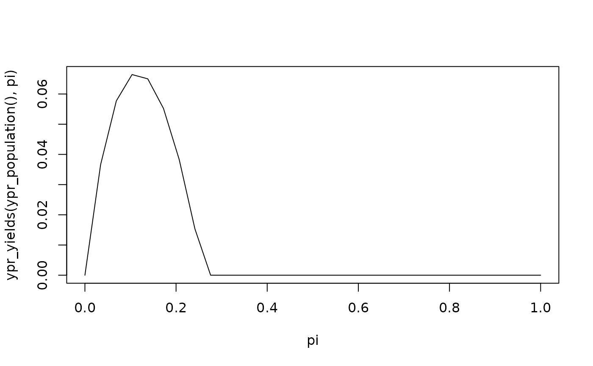

Calculates the yield(s) for a population based on one or more capture rates.
Usage
ypr_yields(
object,
pi = seq(0, 1, length.out = 100),
Ly = 0,
harvest = TRUE,
biomass = FALSE
)Arguments
- object
The population or populations.
- pi
A vector of probabilities of capture to calculate the yield for.
- Ly
The minimum length (trophy) fish to consider when calculating the yield (cm).
- harvest
A flag specifying whether to calculate the yield for harvested fish or captures.
- biomass
A flag specifying whether to calculate the yield in terms of the biomass versus number of individuals.
See also
Other yield:
ypr_plot_yield(),
ypr_tabulate_yield(),
ypr_yield()
Other calculate:
ypr_age_at_length(),
ypr_exploitation(),
ypr_length_at_age(),
ypr_optimize(),
ypr_yield()
Examples
pi <- seq(0, 1, length.out = 30)
plot(pi, ypr_yields(ypr_population(), pi), type = "l")
